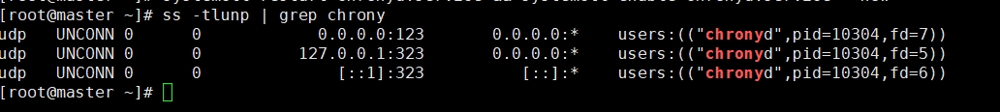
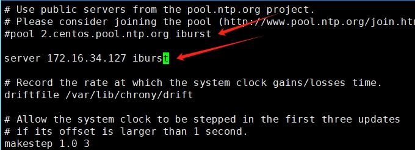
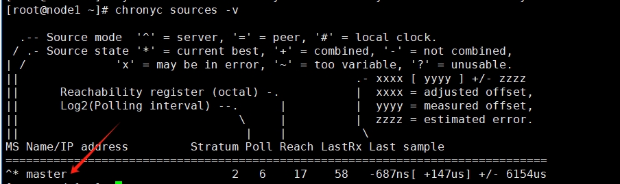

Centos8集群Slurm作业管理系统安装（一）
背景介绍
之前我们安装了Torque作业管理系统，但是这个太老了，而且基本上就只有一些小型的高性能计算集群在使用，目前主流的是使用Slurm作业管理系统，特别是在大型的超算体系下，因此为了以后的工作，还是需要自己搭建一个Slurm作业管理系统。
Chrony服务的搭建
基本概念
Chrony是NTP（Network Time Protocol，网络时间协议，服务器时间同步的一种协议）的另一种实现，与ntpd不同，它可以更快且更准确地同步系统时钟，最大程度的减少时间和频率误差。由于Slurm需要用到munge来做信息认证服务，而munge需要每个节点之间的时间误差在5分钟之内，因此我们需要做时间同步。
基本信息
| 主机名 | 系统 | ip |
|---|---|---|
| master（服务端） | Centos8 stream | 172.16.34.127 |
| node1（客户端） | Centos8 stream | 172.16.34.128 |
服务端和客户端共同配置
为了避免服务端和客户端无法通信，关闭防火墙和selinux
systemctl stop firewalld
systemctl disable firewalld
vi /etc/selinux/config
修改
SELINUX=disabled修改hosts文件
vi /etc/hosts
添加
172.16.34.127 master
172.16.34.128 node1
服务端的配置
默认下Centos8已经安装了chrony，如果没有安装可以自己安装
yum -y install chrony
修改配置文件
vi /etc/chrony.conf
添加
allow 172.16.34.0/24配置成功后，重启服务，并配置开机自启动
systemctl restart chronyd.service && systemctl enable chronyd.service --now
查看是否成功
ss -tlunp | grep chronyd

客户端的配置
默认下Centos8已经安装了chrony，如果没有安装可以自己安装
yum -y install chrony
修改配置文件
vi /etc/chrony.conf
注释掉默认的NTP服务器地址，添加服务端的地址
server 172.16.34.127 iburst

配置成功后，重启服务，并配置开机自启动
systemctl restart chronyd.service && systemctl enable chronyd.service --now
查看是否成功
chronyc sources -v

- 服务器地址前有^*，表示已经配置成功NTP服务器
NIS系统的搭建
NFS系统的搭建
集群免密登录
参考
本博客所有文章除特别声明外，均采用 CC BY-NC-SA 4.0 许可协议。转载请注明来自 哆啦酱的点心屋！
相关推荐


评论